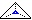

1996-02-29
Karesformo de Makintoŝo ☺.
Angle: MAC
1996-02-29
Vd disko.
Angle: magnetic disk
Ruse: магнитный диск
1996-02-29
Speco de energi-nedependa memoro el feritaj kernoj, kiu estis ordinare uzata en 1955–75 estkiel ĉefmemoro; tial la termino «magnetkerna memoro» ofte aperadis anstataŭ «ĉefmemoro» (nun oni simile misuzas la anglan RAM).
Angle: core
Ruse:
оперативная память на магнитных
сердечниках
1996-02-29
Usona kompanio, la plej granda liveranto de operaciumoj kaj alia programaro por IBM-PC.
Fondita (sub la nomo «Micro-soft») en 1975 de Bill Gates kaj Paul Allen.
Vd MS-DOS, Windows, RTF, MS-akceptejo.
Angle: Microsoft Corporation
1996-02-29
 Signobildo de Eŭropa cifero el tia tiparo, ke ĉiuj ciferoj 1234567890 estas egale
altaj (kutime, kiel la ĉefliteroj); kp minuskla cifero.
Signobildo de Eŭropa cifero el tia tiparo, ke ĉiuj ciferoj 1234567890 estas egale
altaj (kutime, kiel la ĉefliteroj); kp minuskla cifero.
Angle: lining figure, upper-case figure
1996-02-29
« Litero en formo de majusklo sed samgranda kiel minusklo de
la sama serio» [PIV1].
Noto. Oni povas pravigi la terminon majuskleta per tio, ke VORTOJN MAJUSKLETAJN limigas tri horizontaloj (kp majusklo); do, «majuskleta signaro» estas majuskla de sube kaj minuskla de supre, «duonmajuskla».
Angle: small cap(ital)s
France: médiuscules
Germane: Kapitälchen
Hispane: versalitas
Ruse: капитель
1996-02-29
La ago
transformi etliterojn en ĉefliterojn, precipe tutvorte, kiel faras la
Emaksa komando M-u: komando→KOMANDO. Kp nomuskla, minuskligo.
Rim. Majuskligo ne tuŝas neliterajn signojn; ekz-e xv-3.10a iĝas XV-3.10A, ne XV_#>!)A; la anglalingvaj terminoj tamen ne distingas ŝanĝon de uskleco disde registrumŝanĝo.
Angle: upcasing, upshifting
Ruse:
поднять в верхний регистр
2000-08-27
«Ĉeflitero, precipe je la komenco de la vorto» [PIV1].
En filologio validas alia difino: majuskla signaro
estas signaro, kies ĉiuj signobildoj enskribeblas inter du paralelaj
horizontaloj  , dum en minuskla signaro diversaj signobildoj povas tuŝi
kvar tiajn horizontalajn envelopojn
, dum en minuskla signaro diversaj signobildoj povas tuŝi
kvar tiajn horizontalajn envelopojn  .
.
Nu, tiusence majuskla litero estas uzebla kiel simonimo de ĉeflitero, kvankam praktike ĝi plej ofte aperas en nomusklaj vortoj (kion aludas ankaŭ la PIV1-a difino).
Eksterliniaj diakritiloj (ekz-e en Ä Ç Ĉ È ĥ Ñ) rompas tiun idealan skemon kaj prezentas veran problemon:
La komputika senco ŝajne pli proksimas la filologian; la frazo «MS-DOS majuskligas la dosiernomojn» signifas ke ekz-e kl.htm iĝas KL.HTM kaj la majuskligo de «vorto» estas «VORTO» (la komando M-u en Emakso).
Kp uskleco, registrumo.
Angle: capital letter;
majuscule script, majuscular script
France: majuscule
Germane: großer Buchstabe; Majuskel, Versal(ien)
Pole: duża litera; majuskuła
Ruse:
прописная буква, большая буква, заглавная
буква; маюскул
1998-11-21
Serio de personaj komputiloj de la firmao Apple, la normo MAC bazita sur la arkitekturo de la mikroprocesoroj 68000…68040, sur la sistema interfaco ADB, sur grafika interfaco uzula.
Angle: MAC, Macintosh
1996-02-29
Malvolvo, anstataŭigo de makrokomandoj je la tekstoj specifitaj per la koncerna makroodifino kaj la faktaj parametroj de la makrokomando; traduko el makrokomanda programlingvo.
Angle: macro generation,
macro expansion, macro substitution
Ruse:
макрогенерация, макрорасширение
1996-02-29
En dialogo, rimedo ebliganta al la uzulo registri sekvencon de klavopremoj, atribui al ĝi nomon (plej ofte, klavon, eventuale en speciala registrumo aŭ en kombino kun funkcia klavo), kaj laŭbezone plenumadi tiun sekvencon per la premo sur la nomantan «makroklavo». Ekz-e, en iuj redaktiloj la funkcia klavo f6 havas la rolon de makroklava aktivigilo; se onin tedas enigadi la longan vortosimbolon PROCEDURO, oni povas registri ĝin kun la nomo p, kaj du klavtuŝoj: unu al f6, kaj tuj poste al p, ekvivalentos al la dek: PROCEDURO␣. En la registrata sekvenco povas aperi reĝimklavoj (sagoklavoj ktp).
Angle: macro, key
sequence, programmed key
Ruse: макроклавиша,
программируемая клавиша
1996-02-29
Simbola maŝinkodo inter kies frazoj povas aperi makrokomandoj.
Angle: macro assembler
Ruse: макрокод, макроассемблер
1996-02-29
Voko de makroo, frazo en programo, kiu konsistas el la nomo de la makroo kaj faktaj parametroj; dum makroa generado makrokomandon anstataŭas la teksto de la makroodifino (identigita per la nomo), modifita laŭ la valoroj de la faktaj parametroj. Multaj simbolaj maŝinkodoj disponigas apriorajn (aŭ praajn, antaŭdifinitajn) makrokomandojn por ofte uzataj komandkombinoj.
Angle: macro instruction
Ruse:
макрокоманда
(2) makro·komand·o —
En dialogaj sistemoj, komando kiu estas sekvenco da aliaj komandoj; vd makroklavo.
Angle: macro command
Ruse: макрокоманда
1996-02-29
Ĝeneraliga nomo de makrokomando aŭ makroklavo kaj ties makroodifino.
Noto. «makro· … Vortkomenco en sciencaj nomoj, signifanta grandega…» [PIV1].
Angle: macro
Ruse:
макрос
1996-02-29
Priskribo de la sintakso (interfaco) de makrokomando kaj de la algoritmo por generi anstataŭigan tekston. La sintaksa priskribo kutime konsistas el nomo de la makroo kaj formalaj parametroj (poziciaj parametroj kajaŭ ŝlosilvortaj parametroj). Ekz-e vd makroodifinon en TeX (Pri Teĥo).
Angle: macro definition, macro declaration
Ruse:
макроопределение
1996-02-29
Traktilo plenumanta makroan generadon. Ofte makroogenerilo estas parto de asemblilo.
Angle: macro generator, macro processor
Ruse:
макрогенератор, макропроцессор
1996-02-29
Mallongigo de la vorto maksimumo, uzata en matematikaj formuloj kiel operacisimbolo, ekz-e maksx<0 f(x). Kp min.
Angle: max
1996-02-29
Parto de memoradministrilo, plenumanta la makulaturtraktadon. Vd kompaktiga makulaturtraktado.
Angle: garbage collector
France: ramasse-miettes, programme récupérateur, nettoyeur
Ruse: сборщик мусора
1996-02-29
Memoro okupita per ne plu bezonataj (partoj de) datumoj, speciale kiam ĉiuj rimedoj por atingi ilin estas perditaj de la programo. Bone konstruita memoradministrilo povas kolekti makulaturon (vd makulaturtraktado) ebligante reuzon de tia memoro por krei novajn objektojn.
Angle: garbage
Ruse: мусор
1996-02-29
La agado de memoradministrilo, celanta trovi la makulaturon por ĝin malokupi, kompaktigi kaj ebligi ĝian reuzon.
Angle: garbage collection
Germane: Speicherbereinigung
Ruse: чистка
памяти, сборка мусора
1996-02-29
 Ĉesigi partoprenon en dissendolisto aŭ forumo; kp aboni.
Ĉesigi partoprenon en dissendolisto aŭ forumo; kp aboni.
Angle: unsubscribe
Ruse: отписаться
2001-05-28
Liva korno.
Angle: grave accent, low pitch
France: accent grave
Germane: Gravis, Tiefton, fallender Ton
Ruse:
гравис, тяжёлое ударение, тупой тон
1996-04-16
∏ Unusenca.
1996-02-29
La kovrila plato aŭ folio, kontraŭa al la
antaŭa kovrilo.
Angle: back cover
France: plat derrière
Germane: Rückdeckel, Hinterdeckel
Ruse:
последняя страница обложки
1996-12-28
La signo
‘ (la supra 6-citilo). En la angla
tradicio kaj en multaj programlingvoj ĝi estas speco de malferma citilo kaj
ĝia signobildo ofte uzurpas la lokon de liva korno (Askie 96).
20$ pwd
/home/pok
21$ ls | wc -w
46
22$ echo la dosierujo `pwd` entenas `ls|wc -w` dosierojn
la dosierujo /home/pok entenas 46 dosierojn Angle: backquote, backtick, left quote, reverse apostrophe
1996-02-29
Duloka Bulea operacio, iam signata per ⊽, NEK aŭ /; ĝi esprimeblas per la kombinaĵo
x⊽y = ¬(x∨y) = (¬x) ∧ (¬y)
La esprimon x⊽y oni voĉlegu «ikso malaŭ ipsilono», aŭ «nek ikso, nek ipsilono» (vd Vertabelo de la ĉefaj Buleaj operacioj).
Malaŭo estas speciale interesa tial, ke ajna Bulea funkcio estas esprimebla per tiu sola operacio:
x⊽x = ¬x∧¬x = ¬x;
(x⊽y)⊽(x⊽y) = ¬(¬x∧¬y∧¬(¬x∧¬y =
[¬(¬x∨¬(¬y]∧[¬(¬x∨¬(¬y] = x∨y
(x⊽x)⊽(y⊽y) = ¬(¬x∧¬x∧¬(¬y∧¬y =
¬¬x∧¬¬y = x∧y
ktp, kp malkajo.
Angle: NOR, Peirce function, Nicod function, antialternative
1996-02-29
Angle: on-line
1996-02-29
Ĉe serĉo (ekz-e en decidarbo), procedo per kiu, post malsukcesa provo, koncernaj variabloj de la serĉa programo rericevas siajn antaŭajn valorojn. Vd problemo pri ok damoj.
Angle: backtracking
France: retour arrière
Ruse: откат
1996-02-29
Malŝalti opcion disponigantan koncernan reĝimon; ekz-e ĉe muntado de Linko oni povas malebligi ties uzeblon kiel novaĵlegilo per la opcio –disable-news, kiu forigas el la konstruata kodo la rimedojn por konekto al NNTP-serviloj.
Angle: disable
2001-07-08
Tabelo aŭ matrico en kiu relative multaj elementoj egalas nulon. Anstataŭ regulpaŝajn tabelojn, oni ofte uzas por ilia prezento ligillistojn, (ekzemplo: Interna prezento de grafeoj). Vd ankaŭ rubanda matrico, densa tabelo.
Angle:
sparse matrix (array)
Ruse: разреженная матрица
1999-02-09
En dialogo, speciala komando kiu neniigas la efikon de la ĵus plenumita(j) komando(j) — sed kutime, ne sian propran. Kp refari.
Angle: undo, cancel
Ruse: делать откат, откатиться
1996-09-16
Plenumi operacion atribuantan al dosiervariablo (aŭ al alia rimedo por indiki logikan dosieron) konkretan «fizikan» dosieron (datumaron, eneligan organon). Malfermi dosieron nepre necesas, se la koncerna dosiero estas uzota por skribi aŭ legi. Kp fermi dosieron.
Rim. En Paskalo la malfermo okazas implice, en la pliopo de la aliaj programlingvoj por ĝi estas specialaj proceduroj.
Angle: open a file
Ruse: закрыть файл
1996-02-29
Proceduro kies ĉiuj vokojn la tradukilo realigas kiel malfermitajn procedurvokojn. Kontraste al makrooj, la nomoj en malfermita proceduro estas identigataj laŭ tiuj samaj reguloj, kiel en la fermitaj proceduroj.
Angle: in-line subroutine
France: sous-programme ouvert
Germane: offenes Unterprogramm
Ruse: открытая
процедура, подставляемая процедура
1998-11-02
Maniero traduki procedurvokon per kopio de la korpo de la proceduro (kun anstataŭigo de la formalaj parametroj je la faktaj parametroj). Tia voko ĉiam estas aplikata al la malfermitaj proceduroj; ĝi ankaŭ aplikeblas al tiuj vokoj de fermitaj proceduroj, kiuj estas kritaj por rendimento de la programo.
Angle: in-line subroutine expansion
Ruse: открытая подстановка процедуры,
открытый вызов процедуры
1998-11-02
Abstrakta aŭtomato, almenaŭ unu el kies organoj estas nefinia; ekz-e Turinga aŭtomato, reĝistra aŭtomato (tiu lasta pro la nefinia kapacito de siaj reĝistroj).
Angle: infinite automaton
Ruse: бесконечный
автомат
1996-02-29
Noto. «infinit·o   Senlima grando, spaco aŭ malproksimo» [PIV1].
Senlima grando, spaco aŭ malproksimo» [PIV1].
Angle: infinity
Ruse: бесконечность
1996-02-29
La koloro de signoj sur la ekrano (kontraste al fono).
Angle: foreground
2000-08-19
Malfari la efikon de instali, do, malokupi la koncernajn risurcojn kaj maldisponigi la koncerna(j)n funkcio(j)n.
Angle:
deinstall, uninstall, unmount
Ruse: снять, убрать
1996-02-29
Utilaĵo por malinstali programon (aplikaĵon). Kp instalilo.
Angle: uninstaller, deinstallation program
1998-06-22
Bulea operacio; x⊼y veras SSE almenaŭ unu el la argumentoj x aŭ y estas malvero (vd Vertabelo de la ĉefaj Buleaj operacioj); alivorte,
x⊼y = ¬(x∧y) = (¬x)∨(¬y)
Matematikistoj ofte signas malkajon per | (kiu simbolo en pluraj programlingvoj estas uzata por aŭo).
Malkajo sufiĉas por esprimi ajnan Bulean funkcion:
x⊼x = ¬x∨¬x = ¬x
(x⊼y) ⊼ (x⊼y) = ¬(¬x∨¬y ∨ ¬(¬x∨¬y = (¬¬x∧(¬¬y ∨ (¬¬x∧(¬¬y = x∧y
(x⊼x) ⊼ (y⊼y) = ¬(¬x∨¬x ∨ ¬(¬y∨¬y =
¬(¬x ∨ ¬(¬y = x∨y
Angle: NAND function,
Sheffer stroke, nonconjunction, dagger operator
Germane: negierte Konjunktion
Ruse: штрих
Шефера
1996-02-29
Transformi koditan mesaĝon en ĝian originalan prezenton (vd Pri la kodoj matematike).
Angle: decode
France: décoder, déchiffrer
Ruse:
декодировать
1996-02-29
Aparata aŭ programa rimedo por malkodi. Kp kodilo.
Angle: decoder
Ruse:
дешифратор
1996-02-29
Forigi la komentokrampojn de antaŭe forkomentita teksto, tiel ke ĝi ree iĝu signifa por koncerna traktilo (tradukilo ktp).
Angle: uncomment
Ruse: раскомментировать
1997-09-22
Proceduro kiun klaso en C++ disponigas por detrui siajn objektojn. Kp konstruilo.
Angle: destructor
Ruse: деструктор
1996-06-03
Ordigo laŭ kreska ordo. Kp kreska ordigo.
Angle: descending sort
Germane: tri décroisant
Germane: absteigendes Sortieren
Ruse:
сортировка по убыванию
1999-02-20
En listo, tia aranĝo de la elementoj ke la pli grandaj antaŭas la malpli grandajn; ekz-e (99, 11, 5, 3). Kp kreska ordo.
Angle: descending order
Ruse: расположение по убыванию
1999-02-20
Angle: global
Ruse: глобальный
1996-02-29
Plibonigo de programo uzanta informojn pri ĝia tuta teksto; ekz-e elekto de pli efika maniero generi procedurkorpon surbaze de la analizo de ĉiuj vokoj de la proceduro.
Angle: global optimization
Ruse:
глобальная оптимизация
1996-02-29
Komputila reto konektanta komputilojn geografie malproksimajn. Vd interreto, loka reto.
Angle: wide area network,
WAN
Ruse: глобальная вычислительная
сеть, ГВС
1996-10-15
Angle: global variable
Ruse: глобальная
переменная
1996-02-29
Parametro kiun oni rajtas ne indiki en komando, voko de proceduro aŭ makroo ktp (precipe se la defaŭlta valoro taŭgas por la celo de la uzanto). Kp nepra parametro.
Angle: optional parameter
Ruse:
необязательный параметр
1999-10-22
Dosiero kreata de laboro por ties interna uzo (ekz-e dum seanco de redaktado), kiun tiu laboro povas aŭ devas malkrei fine de sia plenumo (eventuale, post rekopiado de la enhavo de la malneta dosiero en la netan dosieron, se la uzulo kontentas pri la rezulto).
Kp labora.
Angle: scratch file
France: fichier brouillon, fichier de travail, fichier de manœuvre
Germane: ungeschütze Datei, Hilfsdatei
Ruse:
рабочий файл, временный файл
1996-02-29
Rezigni ricevitan risurcon, ebligante ĝian disponigon al alia procezo; pri la memoro ankaŭ: detrui.
Angle: deallocate
Ruse:
освободить
1996-02-29
Transformi datumon el memorŝpara prezento, oportuna por konservado aŭ transmeto, en prezenton oportunan por datumprilaboro.
Angle: unpack
Ruse: распаковать
1996-02-29
Decido, procedo, maniero agi kiu estas eksterdube malĝusta aŭ malkonvena; la malo de la Pravaĵo.
Angle: the Wrong Thing
2003-06-04
En retletero, pli-malpli rita akompana aserto (ofte aldonata aŭtomate per la poŝtilo) pri la evidenta, kvankam iam forgesata fakto, ke la opinioj de la aŭtoro ne nepre koincidas kun tiuj de la organizo, per kies komputilo la retletero trafis en la reton.
Angle: disclaimer
1996-02-29
Kroma cifero aperanta kiam la sumo aŭ la produto de la operandaj ciferoj superas la plej grandan nombron prezenteblan en la koncerna ciferpozicio; tiu cifero povas esti traktita dum la prilaboro de alia ciferpozicio. — Kp prunti.
Angle: carry
Ruse:
перенос
1996-02-29
Adresado ĉe kiu en la komando estas indikita la adreso de memorero entenanta la adreson de la operando (kp referenco; kutime ĝia rango estas 2, sed fojfoje oni bezonas adreson de adreso de adreso … do, n-rangan adresadon).
Angle: indirect addressing
Ruse:
косвенная адресация
1998-11-04
Forigi la balastajn
spacetojn, enŝovitajn por alkadrigi la randojn de la teksto.
Angle: unjustify
1996-08-25
Duloka rilato R⊆A×A tia, ke el xRy ĉiam sekvas ¬(yRx); ekz-e la rilato <. Kp antisimetria rilato.
Angle: asymmetric relation
1996-02-29
Datumtipo konstruita el aliaj datumtipoj (kp simpla tipo, konstruilo). En Paskalo,
malsimpla_tipo =
["PAKITA"] (tabeltipo | rikordotipo | artipo | dosiertipo).
La ŝlosilvorto PAKITA antaŭ malsimpla tipo rekomendas al la tradukilo ĉiel ŝpari la memoron kreatan por la objektoj de tiu tipo, eĉ je la kosto de malpli rapida atingo; tia rekomendo estas precipe grava por la komputiloj kun relative grandaj ĉeloj (ekz-e po 48 bit); la tradukiloj por bajtmemoraj komputiloj (kiaj estas la personaj komputiloj) tiun pragmatikan rekomendon kutime ne atentas.
Noto. En la originala sintakso de Pascal malsimpla tipo estas nomata struktura, simetrie al struktura ordono; iujn ĝenas tiu termino, ĉar en PL/I, ALGOL-68, C la vorto strukturo estas rezervita por rikordo.
Angle: structured type
Ruse: сложный тип
1996-02-29
Malvalidigi reĝimon de funkciado. Kp malebligi; ŝalti.
Angle: disable, turn off
Ruse: выключить
1996-02-29
Malaltnivela komputila komando per kiu procezo sciigas, ke ĝi malokupas kritan risurcon. Kp ŝloso.
Angle: unlock
Ruse:
отпереть
1996-02-29
Angle: underflow
France: dépassement inférieur
Germane: Unterlauf, Unterschreitung
Pole: niedomiar
Ruse: потеря
значимости; исчерпание стэка, выход за
нижнюю границу
1996-02-29
Malŝalti (reĝimon de funkciado).
Angle:
disable, turn off
Ruse: выключить
1996-02-29
Ω Plena reŝargo, kun malŝalto de la kurento — aŭ almenaŭ (se temas pri la porteblaj komputiloj) kun perdo la enhavo de la energidependa memoro. Kp varma restart(ig)o.
Angle: cold reboot, hard reset
Ruse:
холодная перезагрузка
2002-08-01
Bulea valoro 0.
Noto. Falso estus pli internacia vorto, kvankam malpli sistema kaj iom «falsa». Laŭ PIV1:
falsi tr Elfari ion malveran kaj doni ĝin kiel veran, por tiri el tio profiton …
falso … 2 Io falsita.
Angle: false
France: faux
Pole: falsz
Ruse: ложь
1999-07-23
Angle: unerase, undelete
France: restituer
Ruse: восстановить
(удалённые данные)
1996-02-29
Maniero evoluigi kajaŭ porti tradukilon de unu komputilo sur aliajn.
Estu tradukilo Ti verkita en sia fontlingvo F kaj funkcianta sur ilkomputilo i. Tradukilon por celkomputilo c oni povas ricevi adaptinte Ti al generado de celprogramoj en Lc, maŝinlingvo de c; tiun adaptaĵon ni signu Tic. Uzante Tic estkiel gasttradukilon, oni tradukas la fontprogramon de Tic en Lc, kio rezultigas la celatan tradukilon Tcc: F→Lc. Kp startigo, praŝargo.
Angle: bootstrap
France: amorce
Ruse: раскрутка
(2) mal·volv·o (de makroo, ŝelvariablo) —
Anstataŭigo de apero de la nomo de makrokomando (makroa generado) aŭ de medivariablo je ties kuranta valoro. Vd ankaŭ krampomalvolvo.
Angle:
expansion, substitution
Germane: Erweiterung
Ruse: подстановка
1998-08-21
Malpligrandigi fenestron ĝis antaŭfiksita grando aŭ eĉ ĝis piktogramo. Kp zomi.
Angle: unzoom, zoom out
Ruse: откатиться, свернуть, запахнуть
окно
1996-12-12
En objektema programado, speco de referenco, indikanta la vojon por atingi objekton kaj la rajtojn plenumi super ĝi certajn operaciojn.
Angle: capability (capa)
Germane: Vermögenszeiger
Ruse: мандат
1996-02-29
Peco de dokumentaro, instrukcio pri uzado de programo aŭ aparato.
Noto. Komunlingve tio estus «instrukcio», sed tro multaj komputikistoj misuzas la vorton anstataŭ komandon.
Angle: manual
Germane: Handbuch
Ruse: руководство
1996-02-29
Noto. Kvankam internacia, tiu vortuzo estas granda licenco rilate la lernejan difinon de mantiso: «(parolante pri logaritmo) La logaritmo minus ĝia karakteristiko» [PIV1].
Angle: mantissa
Ruse: мантисса
1996-02-29
Ĵeto.
Angle: map, mapping
Ruse: отображение
1996-02-29
Provizado de komputila teksto je (Askie koditaj) informoj, indikantaj la logikajn rolojn de ĝiaj partoj, je aranĝo-komandoj aŭ je aliaj datumoj por aŭtomata tekstotraktado.
Ekz-e ĉi tiu hiperteksto entenas specialajn markaĵojn por realigi la hipertekstajn ligilojn, la tiparan emfazon, la aranĝon de la alineoj ktp. Menciindajn manierojn de markado disponigas HTML, RTF, Teĥo.
Angle: markup
France: annotation
Ruse: разметка
1996-02-29
Simbolo atribuita al ordono kaj uzata en saltoj kiel nomo de tiu ordono (pli ĝuste, de la loko kie ĝi situas). Kp etikedo. En Paskalo la markoj havas tre maloportunan formon de sensignuma entjero (la antaŭiraj nuloj estas sensignifaj):
marko = cifero { cifero }. Angle: label
Germane: Marke
Ruse: метка
1996-02-29
Speco de ekrana butono, ortograma areo sur la ekrano (ofte bildigata per la rektaj krampoj: [ ]) per kiu la uzulo povas (mal)marki, tiel (mal)ŝaltante, la koncernan opcion. Se la opcio iĝas (mal)ŝaltita, la butono estas bildigata kiel «(mal)premita» — aŭ antaŭ ĝia titolo (mal)aperas kruceto (+ aŭ × aŭ X) aŭ radiksigno («pipo», «birdeto»). Kutime markobutonoj ariĝas en grupojn, ebligante elekti plurajn opciojn. Kp radiobutono. Ekz-e (provu!)
Evidente, oni povasAngle: check box, choice button
France: case à cocher
Ruse: выключатель
1996-08-27
Ĉeno uzata por indiki, kiuj partoj de alia (de operanda) ĉeno estu signifaj por la posta traktado. Se ambaŭ ĉenoj (la masko kaj la operando) estas bitĉenoj, la apliko de la masko ekvivalentas al ilia laŭbita kajo.
Angle: mask
Ruse: маска
1996-02-29
Angle: machine code
Ruse: машинный код
1996-02-29
Angle: machine code, machine language
Ruse:
машинный язык
1996-02-29
Ofta sinonimo por komputilo kaj aŭtomato (ekz-e Turinga maŝino), precipe en kunmetaĵoj (ekz-e maŝinlingvo).
Angle: machine
Ruse: машина
1996-02-29
Angle: loop
France: boucle
Ruse: петля; цикл
1996-02-29
Parto de operaciesploro studanta problemojn pri ekstrem(um)oj de funkcioj super aroj de finidimensia vektorspaco, kiujn arojn difinas egalaĵoj kajaŭ komparaĵoj. La ĉefa problemo de matematika programado redukteblas al la sekva formo.
Inter la nenegativaj vektoroj x∈ℝⁿ, (xi≥0), plenumantaj la limigojn
{ gj(x) ≤ 0 }1≤j≤m
necesas trovi tian, kiu minimumigu celfunkcion f(x).
Ekz-e vd dorssakproblemo, problemo pri vojaĝa komizo.
Noto. Bedaŭrindas, ke tiu termino, neniel rilata al komputoscienco, misuzas la vorton «programado» (egale kiel la nomoj de subfakoj de matematika programado: dinamika, diskreta, konkava, konveksa, lineara, nelineara programado); tamen tiu misuzo estas absolute internacia.
Angle: mathematical programming
Ruse:
математическое программирование
1996-02-29
Estu matricoj
VAR A: TABELO [1..u,1..v] EL reela;
B: TABELO [1..v,1..w] EL reela; kaj estu variabloj
VAR P: TABELO [1..u,1..w] EL reela;
i, j, k: entjera; La multiplikon P = A⋅B prezentas la algoritmo:
POR i := 1 SUPRE u FARU
POR j := 1 SUPRE u FARU STARTO
s := 0.0;
POR j := 1 SUPRE w FARU s := s + A[i,k] * B[k,j];
P[i,j] := s;
FINO Angle: matrix product
Germane: Matrizenmultiplikation, Matrizenprodukt
Ruse:
умножение матриц
1998-08-29
Dudimensia tabelo:
TIPO matrico = TABELO [1..m,1..n] EL subtipo;
laŭ PIV1,
5 Aro de nombroj aŭ aliaj elementoj aranĝitaj rektangule en horizontalaj kaj vertikalaj linioj; horizontalo, vertikalo de matrico.Matematika studo de matricoj apartenas al lineara algebro. Vd degenera matrico, diagonala matrico, kontraŭsimetria matrico, kvadrata matrico, memadjunkta matrico, orta matrico, rekta matrico, simetria matrico, unita matrico, unuomatrico.
Angle: matrix
Ruse: матрица
1998-08-18
Mallongigo de megabajto; 1 Mbajt = 1024 Kbajt (ankaŭ Mibajt).
Angle: Mbyte
Pole: Mbajt
Ruse: Мбайт
1996-02-29